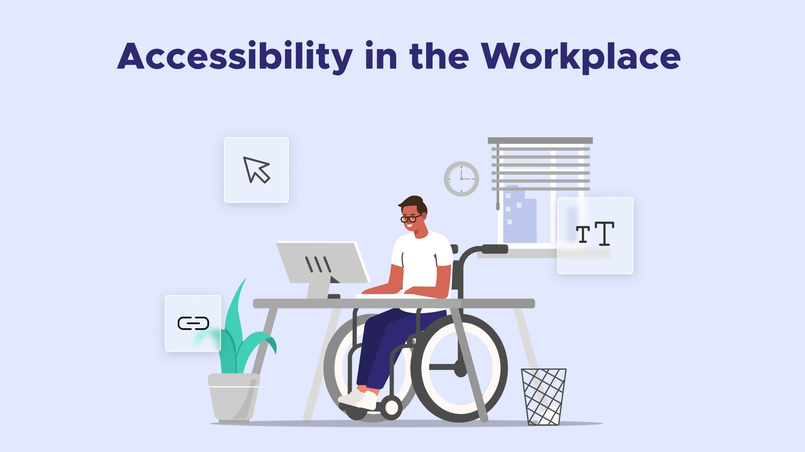
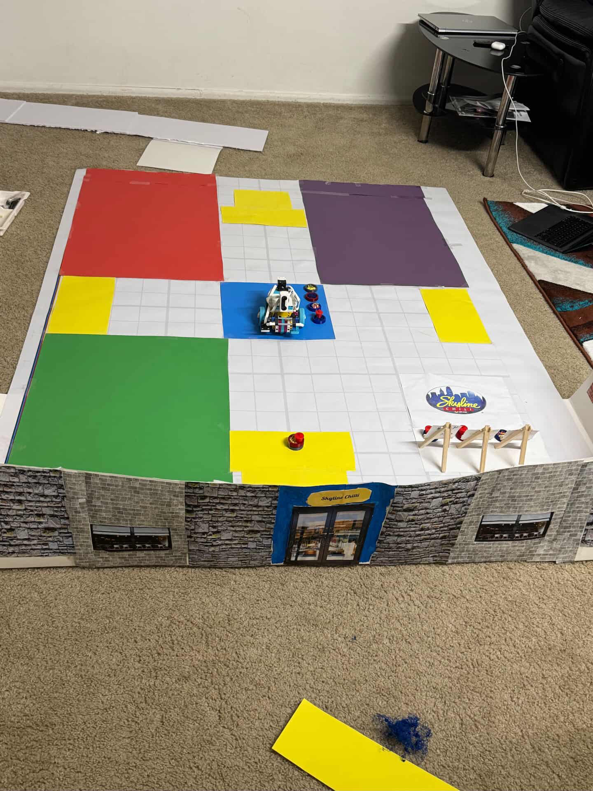
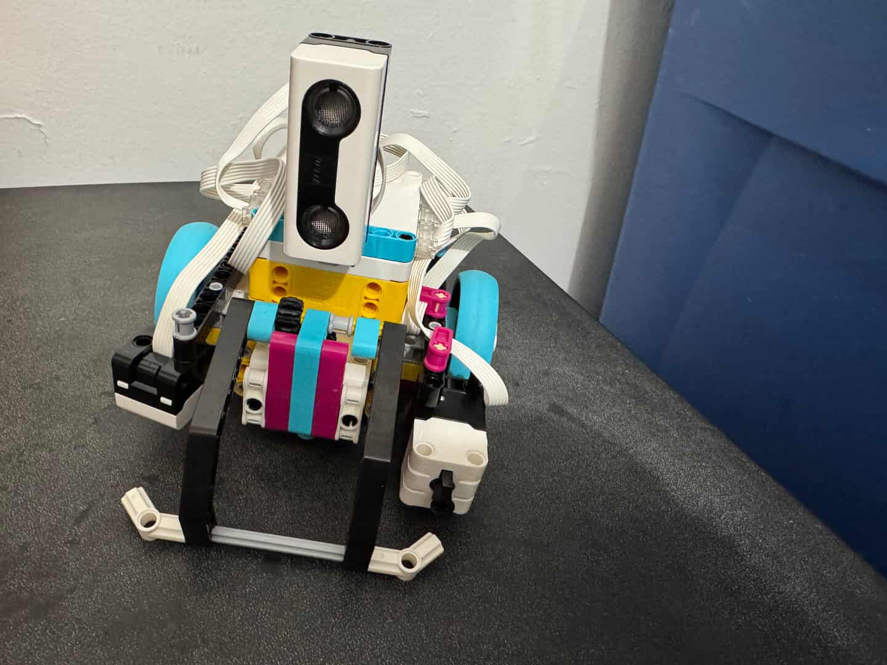
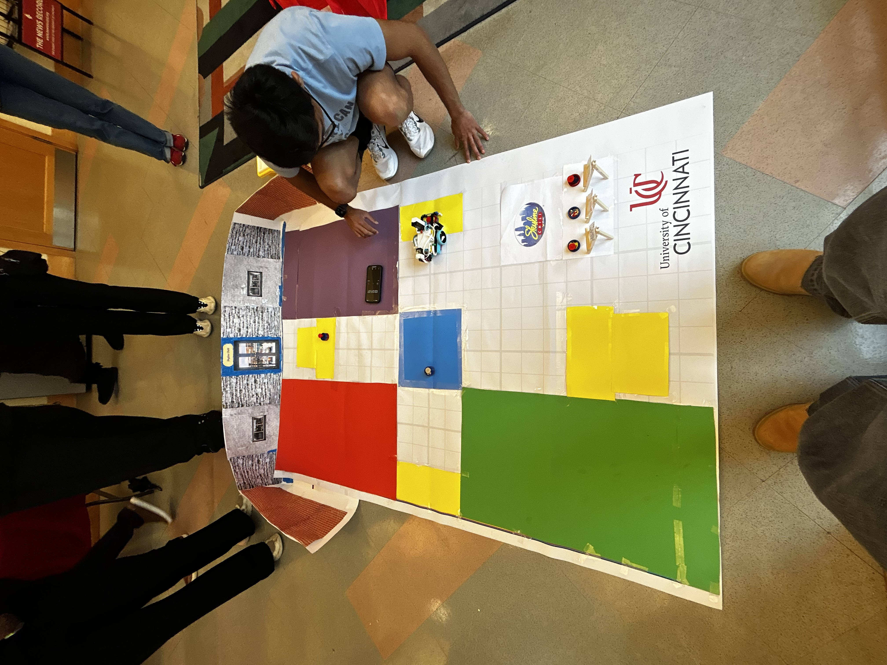

We were tasked with building a robot and a playfield that followed the competition rules. Last year’s challenge was using the bot
to deliver food to tables. The bot had to be built using only the LEGO pieces provided in the kit, and it had to complete deliveries
within a certain amount of time. In addition to the competition runs, we gave a presentation at the end explaining our design process
and how we built the bot. The engineering design process was a major part of the competition, and we had to show how we applied it throughout
development.
This year’s project is focused on wheelchair accessibility in the workplace. We are tasked with making the bot navigate narrow pathways,
rough terrain, and a ramp section of the map.

Under research, we discovered that the most challenging and important part of this project was the playfield. Since the bot was autonomous,
it had to use color sensors, distance sensors, and touch sensors to navigate the playfield and complete deliveries. We had to research how
to use these sensors and how to program them to work together.
We also researched different design ideas for the bot and how to build it
using only the LEGO pieces provided in the kit. We looked into different types of wheels and motors, as well as different ways to mount the
sensors. We also had to learn how to program the bot using LEGO Mindstorms software, which was new to us. Overall, we learned a lot about
robotics, programming, and engineering design through this project.

In the end, we decided to place the tables in a cross orientation so it was easier to identify which table was which.
We used color sensors to detect each table’s color and confirm where the bot was on the map.
br We also used distance sensors
so the bot would stop if something was in front of it, since part of the competition included random obstacles and the bot was
expected to stop and wait until the obstacle was removed. The drop-off mechanism was simple: a lever arm that moved up or down
depending on whether we wanted to place the plate or pick it up.


In the end, we placed first in the competition, even though it was our school’s first year participating and we had no prior experience with
LEGO robotics. We were really proud of how well our bot performed and how well we worked together as a team.
With this project, I learned how important it is to read the rules and constraints carefully, because that was a huge part of the challenge.
We had a cool idea to use an electromagnet to deliver the food, and we even got it working, but I went home that night, reread the rules, and
realized we had to scrap the whole idea because it violated the rule that all parts had to come from the kit.